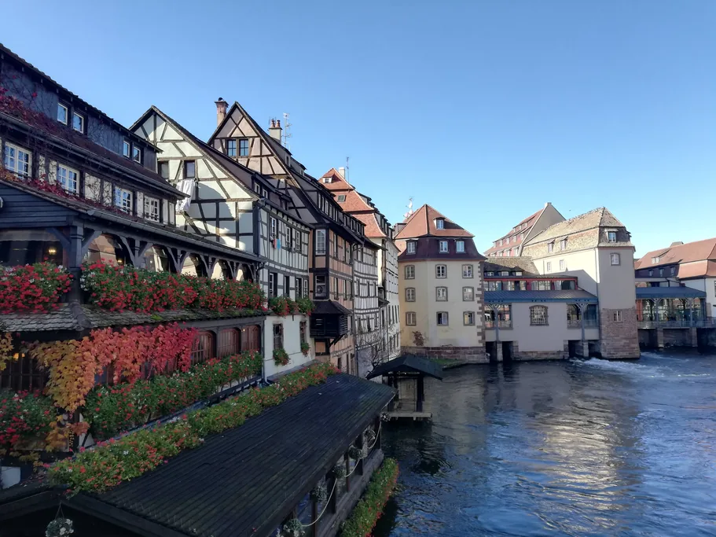
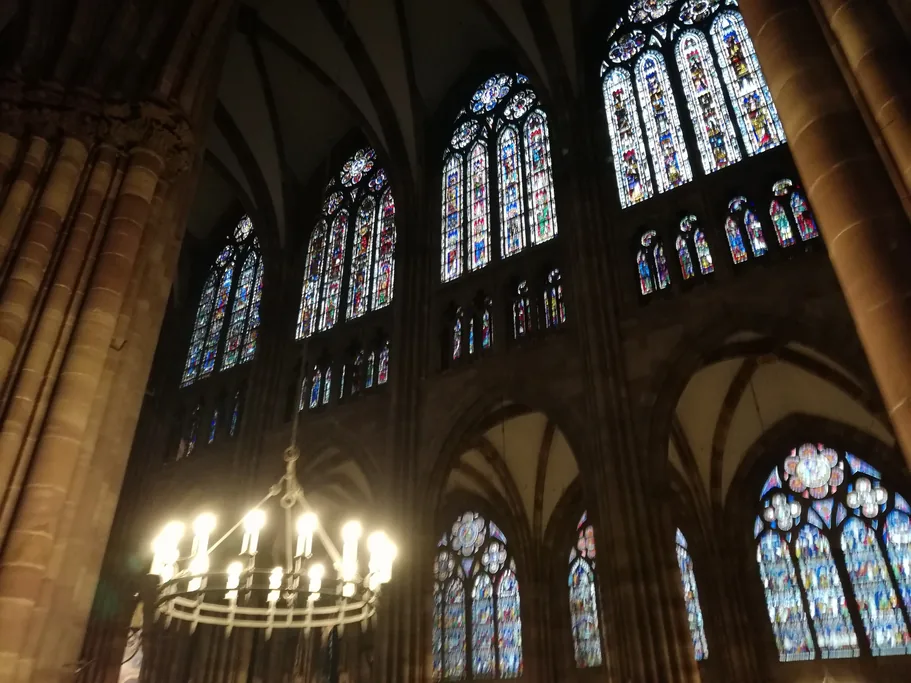

Если вы только выбираете, когда ехать в Страсбург, зима — самый обманчивый сезон. Это не одно время года, а три разные поездки: ярмарочные недели, тихий промежуток после Сочельника и серые, холодные январь и февраль. Разочарованными чаще всего уезжают те, кто выбрал не ту из них.
Первая из них — это глинтвейн, толпа у прилавков и рождественская ярмарка Страсбурга во всём её блеске. У двух других совсем иное настроение: гирлянды без толпы, полупустые музейные залы, долгие обеды в тёплом винштубе. В такие дни город особенно приятно узнавать без спешки. Для таких прогулок мы подготовили аудиогид TouringBee по Страсбургу от 9,99 €. Записи вы запускаете сами, так что в любой момент можно зайти в кафе погреться, а потом продолжить с того же места.
Перед бронированием проверьте только одно: основная ярмарка в последние годы закрывалась 24 декабря, а не под Новый год.

Самостоятельный аудиотур по Страсбургу Доступ сразу
Коротко
- Световой день — в середине декабря солнце встаёт чуть позже 8:00 и садится около 16:30, светло примерно восемь часов
- Рождественская ярмарка — открытие 27 ноября 2026 года. Дату закрытия город пока не объявил, а все подтверждённые даты собраны в календаре рождественской ярмарки
- Погода — в декабре днём в среднем 6 °C, ночью около нуля
- Отели — в декабре заметно дороже, в январе и феврале обычно заметно дешевле
Зима здесь — это три разные поездки

Декабрь, до 24-го
Всё, что вы читали о Страсбурге на Рождество, относится к этим четырём неделям, и только к ним. В декабрьскую субботу у площади Клебер толпа движется еле-еле.
Вечером ярмарка особенно атмосферна: над домиками зажигаются огни. Поэтому светлое время лучше отдать городу, а к прилавкам выйти, когда стемнеет.
Последняя неделя декабря и начало января
Эту поездку планируют очень немногие. Прилавков после Рождества уже нет, но то, что создавало атмосферу, остаётся: гирлянды, освещённые витрины, ёлка на площади Клебер, подсвеченный песчаник. Украшения, как правило, висят до начала января, а толпа, приехавшая ради них, уже разъехалась.
Цены обычно уходят вслед за толпой. Номера, которые в середине декабря было трудно найти, между Рождеством и Новым годом часто снова появляются. Посмотрите цены на отели на 18 декабря, 27 декабря и 4 января, и разница будет видна сразу.
Два предупреждения. 25 декабря и 1 января город почти замирает: смотровая площадка собора, городские музеи и многие рестораны в эти дни не работают. Когда снимать гирлянды, город решает каждый год заново. Обычно это происходит в начале января. Так что считайте гирлянды приятным бонусом, а не поводом выбирать даты.
Январь и февраль
Холодно, серо, дёшево и пусто. Предупреждение это или приглашение — зависит от того, зачем вы едете.
Плюсы января и февраля — почти пустые музейные залы по утрам в будни, столики в винштубах, которые проще найти без брони, и собор в низком зимнем солнце, когда розовый песчаник за час переходит от серого к красному.
Но у этой тишины есть обратная сторона. Маленькая Франция под дождём в четыре часа дня, с каналами цвета мыльной воды, — совсем не открытка. Нет ярмарки, нет праздничной подсветки после первых дней января, нет летних веранд у кафе. Если ваш Страсбург — это прогулки под открытым небом, приезжайте в другой месяц. Если вы едете ради собора, музеев и еды, январь и февраль — один из самых выгодных периодов для поездки.
Цены и толпы по неделям
| Период | Цены на отели | Толпы |
|---|---|---|
| С конца ноября до 24 декабря | Заметно выше, номера часто раскуплены за месяцы | Пик, особенно по выходным с середины декабря |
| С 25 декабря до начала января | Обычно резко падают | Праздничная подсветка часто ещё частично остаётся, людей гораздо меньше |
| Январь и февраль | Обычно заметно ниже, чем в декабре | Тихо, кроме недель сессий |
Страсбург ещё и парламентский город, и в недели сессий отели заполняются в любой сезон. Европейский парламент заседает в Страсбурге 14–17 декабря 2026 года, 18–21 января 2027 года и 15–18 февраля 2027 года, а Парламентская ассамблея Совета Европы собирается 25–29 января 2027 года. Перед бронированием проверьте, не совпадают ли даты вашей поездки с одной из этих сессий.
Самые быстрые поезда из Парижа добираются до Страсбурга примерно за 1 час 45 минут, а вне пиковых декабрьских дат найти более дешёвые билеты проще. Перед покупкой проверьте расписание и цены SNCF.
Погода
Зима здесь скорее серая и холодная, чем дождливая. Вогезы к западу от города создают для Эльзаса выраженную дождевую тень, поэтому Страсбург зимой сравнительно сухой: в декабре выпадает около 45 мм осадков, а в январе и феврале ещё меньше. Главный подвох — в нехватке солнца: за весь декабрь набирается в среднем всего около 44 солнечных часов. В безветренные утра над Илем бывает туман, а примерно в половине ночей каждого зимнего месяца температура опускается ниже нуля.
| Месяц | Средний максимум | Средний минимум | Дней с дождём | Ночей с заморозками |
|---|---|---|---|---|
| Декабрь | 5,9 °C | 0,8 °C | 10 | 13 |
| Январь | 5,2 °C | −0,2 °C | 9 | 15 |
| Февраль | 7,3 °C | 0,0 °C | 8 | 14 |
Климатические нормы Météo-France за 1991–2020 годы, станция Страсбург-Энцайм. Дни с дождём — дни, когда выпало не меньше 1 мм.
Насколько холодно, зависит от того, чем вы заняты. Гулять по Гранд-Иль в тёплом пальто можно часами. По-настоящему пробирает, если приходится долго стоять на месте: у ярмарочного прилавка, в очереди или на смотровой площадке собора на высоте 66 метров. Одевайтесь с расчётом на долгие остановки: шапка, перчатки, шарф и непромокаемая обувь с нормальной подошвой, потому что мокрая брусчатка в темноте скользкая. В толпе на узких улицах капюшон удобнее зонта.
День определяет свет, а не температура
В середине декабря светло с начала девятого до половины пятого. Восемь часов светлого времени меняют весь ритм дня, поэтому дневные и вечерние планы лучше развести.
Смотровую площадку собора, кораблик по Илю, Маленькую Францию, Крытые мосты и террасу на плотине Вобана оставьте на светлое время. А ярмарку, подсвеченные фасады и ужин в винштубе — на вечер. Перепутаете — и подниметесь на 330 ступеней, чтобы посмотреть на фонари.
Собор построен из розового песчаника, и его цвет меняется вместе со светом. В январе собор особенно хорош в последний час перед закатом, так что постарайтесь в этот момент оказаться перед западным фасадом. При низком солнце особенно хорошо видны порталы и сотни каменных фигур, ради которых Страсбургский собор стоит разглядывать не спеша.
Что работает, а что нет
Зимой закрыто меньше мест, чем можно ожидать, но часы работы сокращаются, а несколько особенностей зимнего расписания легко упустить.
| Место | Зимние часы | Цена |
|---|---|---|
| Неф собора | Пн–сб 8:30–11:15 и 12:45–17:45, вс 14:00–17:15. Во время ярмарки пн–сб 8:30–17:45 без перерыва | Бесплатно |
| Астрономические часы | Представление в 12:30, фильм с 12:00. Во время рождественской ярмарки представления нет | 4 € |
| Смотровая площадка собора | 10:00–13:00 и 13:30–18:00, последний подъём в 17:15. Закрыта 25 декабря и 1 января | 10 € |
| Музеи Дворца Роганов | Выходной — вторник. Пн и ср–пт 10:00–13:00 и 14:00–18:00, сб–вс 10:00–18:00. Закрыты 25 декабря и 1 января | Бесплатно в первое воскресенье месяца |
| Исторический музей и большинство других городских музеев | Выходной — понедельник. Вт–пт 10:00–13:00 и 14:00–18:00, сб–вс 10:00–18:00. Закрыты 25 декабря и 1 января | Бесплатно в первое воскресенье месяца |
| Кораблики Batorama | Каждый день, круглый год, на крытых отапливаемых судах. С начала января до начала февраля последний рейс в 15:30 по будням и в 16:30 по выходным | — |
Билеты на представление астрономических часов и на смотровую площадку продаются только в день посещения. Эльзасский музей закрыт на реконструкцию до 1 июня 2028 года.
Прогулка, которую можно поставить на паузу
Зимой особенно удобно остановиться, когда замёрзнете, а потом продолжить прогулку. Аудиогид TouringBee по Страсбургу как раз устроен для такого темпа: вместо гида с зонтиком — рассказчик в наушниках, а маршрут подстраивается под погоду, а не наоборот.
- 33 точки, около 2,5 часа в своём темпе, записи по 1–3 минуты
- От 9,99 €, один платёж, доступ на год, 8 языков
- Работает офлайн после загрузки, роуминг и Wi-Fi не нужны
- Как работает карта: приложение показывает офлайн-карту с GPS и вашим местоположением, так что вы всегда знаете, где находитесь и куда идти дальше. Запись вы включаете сами, когда подходите к точке, а между точками можно сделать паузу любой длины — хоть на целый обед
«Мне 64, путешествую одна. С этим гидом я ходила по Страсбургу целый день, отдыхая в номере, когда было нужно. Гибко, но при этом подробно».
— Reiko_T, Viator, сентябрь 2025
Купить аудиогид по Страсбургу — от 9,99 €
План на холодный дождливый день

В такой день держитесь мест под крышей. Этот маршрут лучше всего работает со среды по воскресенье: по понедельникам закрыт Исторический музей, по вторникам — музеи Дворца Роганов. 25 декабря и 1 января этот маршрут не получится пройти.
10:00 — Дворец Роганов. В епископском дворце XVIII века рядом с собором три музея: изящных искусств, декоративного искусства и археологический. На один только Музей изящных искусств с Джотто, Рафаэлем и Рубенсом легко уйдёт час. Если собираетесь посетить три музея или больше, спросите на кассе об однодневном абонементе, который действует во всех городских музеях, а актуальную цену проверьте на сайте музеев.
12:00 — Исторический музей, в нескольких минутах ходьбы. Его рельефный план города 1727 года площадью около 70 квадратных метров объясняет устройство острова у вас под ногами быстрее любой карты в телефоне. По будням помните о перерыве с 13:00 до 14:00.
13:00 — обед в винштубе. Не торопитесь.
14:30 — крытый кораблик по Илю. Экскурсия Batorama длится около 70 минут и проходит на крытых отапливаемых судах. Зимой последние рейсы отправляются гораздо раньше, чем летом, поэтому сверьтесь с расписанием на этот день и купите билет утром, а не когда начнётся дождь. Билеты продаются на сайте Batorama, в магазине на Соборной площади и в автоматах у магазина и у причалов.
16:00 — собор. Бесплатно, под крышей, а его витражи XII–XIV веков лучше всего смотрятся в ровном зимнем свете. Неф закрывается в 17:45, так что до ужина время есть.
Что зима делает с едой
Эльзасская кухня создана как раз для этого сезона. Почти всё в меню винштуба — неторопливый и сытный ответ холоду: шукрут гарни, бекеофе (название значит «печь пекаря»), фламмкюхе, сыр мюнстер с тмином и картофелем, кугельхопф к кофе. К ним — местное белое в бокале на зелёной ножке. И это только зимняя часть того, что стоит попробовать в Страсбурге.
Зимой всё это особенно хорошо есть за столом в тёплом винштубе. К тому же в январе и феврале столик на 20:00, как правило, найти легче, чем в ярмарочные недели.
Готовы к зимней прогулке?
Приезжайте сразу после Рождества или в конце января, светлое время отдайте городу, а вечер — огням.
Частые вопросы
Какая погода в Страсбурге в декабре?
Холодно и серо: днём в среднем около 6 °C, ночью около нуля. Дождей не так много, но за весь декабрь солнце светит всего около 44 часов, а в безветренные утра бывает туман.
Стоит ли ехать в Страсбург в январе?
Да, если вы едете ради собора, музеев и еды, а не ради атмосферы на улицах. В январе отели обычно заметно дешевле, чем в декабре, и в музеях спокойно. Но ярмарки нет, а праздничную подсветку снимают в начале месяца.
Работает ли рождественская ярмарка после Рождества?
В последние годы нет: основная ярмарка закрывалась 24 декабря. На 2026 год город пока подтвердил только дату открытия — 27 ноября, поэтому дату закрытия проверьте в официальной программе. Гирлянды на улицах обычно висят до начала января.
Во сколько темнеет в Страсбурге зимой?
В середине декабря около 16:30, а рассвет чуть позже 8:00, так что светло примерно восемь часов. Смотровую площадку, кораблик и Маленькую Францию оставьте на светлое время, а подсвеченные фасады — на вечер.
Дешевле ли Страсбург зимой?
Зависит от недели. До 24 декабря отели заметно дороже обычного. С 25 декабря цены обычно резко падают, а в январе и феврале отели заметно дешевле, чем в декабре. Исключение — недели парламентских сессий.
Работают ли музеи зимой?
Да. У трёх музеев Дворца Роганов выходной — вторник, у Исторического и большинства других городских музеев — понедельник. По будням они закрываются на перерыв с 13:00 до 14:00. 25 декабря и 1 января городские музеи закрыты. В первое воскресенье месяца вход для всех бесплатный. Эльзасский музей закрыт до 1 июня 2028 года.
Что почитать дальше
- Полный путеводитель по Страсбургу — где жить, когда ехать, сколько стоит
- Рождественская ярмарка Страсбурга — четыре недели до Рождества
- Страсбургский собор — на что смотреть снаружи и внутри в любое время года
- Один день в Страсбурге — маршрут по часам для короткого зимнего дня
- Что попробовать в Страсбурге — зимнее меню, блюдо за блюдом

Евгений живёт во Франции 16 лет, работал гидом, а потом основал сеть тревел-проектов paris10.travel. Он написал аудиоэкскурсию TouringBee по Страсбургу.
Каждая цена и каждое расписание на этой странице сверены с официальным источником за текущий год. Если факт ещё не опубликован, мы так и пишем, а не гадаем.
Некоторые ссылки на этой странице партнёрские (GetYourGuide, Booking.com, SNCF). Если вы бронируете по ним, мы можем получить небольшую комиссию — для вас цена не меняется. На то, что мы советуем, это не влияет.